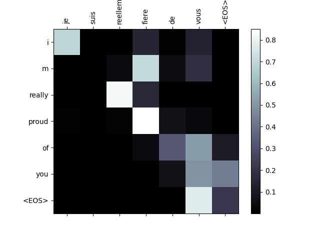

Note
Click here to download the full example code
NLP From Scratch: Translation with a Sequence to Sequence Network and Attention¶
Created On: Mar 24, 2017 | Last Updated: Oct 21, 2024 | Last Verified: Nov 05, 2024
Author: Sean Robertson
This tutorials is part of a three-part series:
NLP From Scratch: Classifying Names with a Character-Level RNN
NLP From Scratch: Generating Names with a Character-Level RNN
NLP From Scratch: Translation with a Sequence to Sequence Network and Attention
This is the third and final tutorial on doing NLP From Scratch, where we write our own classes and functions to preprocess the data to do our NLP modeling tasks.
In this project we will be teaching a neural network to translate from French to English.
[KEY: > input, = target, < output]
> il est en train de peindre un tableau .
= he is painting a picture .
< he is painting a picture .
> pourquoi ne pas essayer ce vin delicieux ?
= why not try that delicious wine ?
< why not try that delicious wine ?
> elle n est pas poete mais romanciere .
= she is not a poet but a novelist .
< she not not a poet but a novelist .
> vous etes trop maigre .
= you re too skinny .
< you re all alone .
… to varying degrees of success.
This is made possible by the simple but powerful idea of the sequence to sequence network, in which two recurrent neural networks work together to transform one sequence to another. An encoder network condenses an input sequence into a vector, and a decoder network unfolds that vector into a new sequence.

To improve upon this model we’ll use an attention mechanism, which lets the decoder learn to focus over a specific range of the input sequence.
Recommended Reading:
I assume you have at least installed PyTorch, know Python, and understand Tensors:
https://pytorch.org/ For installation instructions
Deep Learning with PyTorch: A 60 Minute Blitz to get started with PyTorch in general
Learning PyTorch with Examples for a wide and deep overview
PyTorch for Former Torch Users if you are former Lua Torch user
It would also be useful to know about Sequence to Sequence networks and how they work:
Learning Phrase Representations using RNN Encoder-Decoder for Statistical Machine Translation
Neural Machine Translation by Jointly Learning to Align and Translate
You will also find the previous tutorials on NLP From Scratch: Classifying Names with a Character-Level RNN and NLP From Scratch: Generating Names with a Character-Level RNN helpful as those concepts are very similar to the Encoder and Decoder models, respectively.
Requirements
from __future__ import unicode_literals, print_function, division
from io import open
import unicodedata
import re
import random
import torch
import torch.nn as nn
from torch import optim
import torch.nn.functional as F
import numpy as np
from torch.utils.data import TensorDataset, DataLoader, RandomSampler
device = torch.device("cuda" if torch.cuda.is_available() else "cpu")
Loading data files¶
The data for this project is a set of many thousands of English to French translation pairs.
This question on Open Data Stack Exchange pointed me to the open translation site https://tatoeba.org/ which has downloads available at https://tatoeba.org/eng/downloads - and better yet, someone did the extra work of splitting language pairs into individual text files here: https://www.manythings.org/anki/
The English to French pairs are too big to include in the repository, so
download to data/eng-fra.txt before continuing. The file is a tab
separated list of translation pairs:
I am cold. J'ai froid.
Note
Download the data from here and extract it to the current directory.
Similar to the character encoding used in the character-level RNN tutorials, we will be representing each word in a language as a one-hot vector, or giant vector of zeros except for a single one (at the index of the word). Compared to the dozens of characters that might exist in a language, there are many many more words, so the encoding vector is much larger. We will however cheat a bit and trim the data to only use a few thousand words per language.

We’ll need a unique index per word to use as the inputs and targets of
the networks later. To keep track of all this we will use a helper class
called Lang which has word → index (word2index) and index → word
(index2word) dictionaries, as well as a count of each word
word2count which will be used to replace rare words later.
SOS_token = 0
EOS_token = 1
class Lang:
def __init__(self, name):
self.name = name
self.word2index = {}
self.word2count = {}
self.index2word = {0: "SOS", 1: "EOS"}
self.n_words = 2 # Count SOS and EOS
def addSentence(self, sentence):
for word in sentence.split(' '):
self.addWord(word)
def addWord(self, word):
if word not in self.word2index:
self.word2index[word] = self.n_words
self.word2count[word] = 1
self.index2word[self.n_words] = word
self.n_words += 1
else:
self.word2count[word] += 1
The files are all in Unicode, to simplify we will turn Unicode characters to ASCII, make everything lowercase, and trim most punctuation.
# Turn a Unicode string to plain ASCII, thanks to
# https://stackoverflow.com/a/518232/2809427
def unicodeToAscii(s):
return ''.join(
c for c in unicodedata.normalize('NFD', s)
if unicodedata.category(c) != 'Mn'
)
# Lowercase, trim, and remove non-letter characters
def normalizeString(s):
s = unicodeToAscii(s.lower().strip())
s = re.sub(r"([.!?])", r" \1", s)
s = re.sub(r"[^a-zA-Z!?]+", r" ", s)
return s.strip()
To read the data file we will split the file into lines, and then split
lines into pairs. The files are all English → Other Language, so if we
want to translate from Other Language → English I added the reverse
flag to reverse the pairs.
def readLangs(lang1, lang2, reverse=False):
print("Reading lines...")
# Read the file and split into lines
lines = open('data/%s-%s.txt' % (lang1, lang2), encoding='utf-8').\
read().strip().split('\n')
# Split every line into pairs and normalize
pairs = [[normalizeString(s) for s in l.split('\t')] for l in lines]
# Reverse pairs, make Lang instances
if reverse:
pairs = [list(reversed(p)) for p in pairs]
input_lang = Lang(lang2)
output_lang = Lang(lang1)
else:
input_lang = Lang(lang1)
output_lang = Lang(lang2)
return input_lang, output_lang, pairs
Since there are a lot of example sentences and we want to train something quickly, we’ll trim the data set to only relatively short and simple sentences. Here the maximum length is 10 words (that includes ending punctuation) and we’re filtering to sentences that translate to the form “I am” or “He is” etc. (accounting for apostrophes replaced earlier).
MAX_LENGTH = 10
eng_prefixes = (
"i am ", "i m ",
"he is", "he s ",
"she is", "she s ",
"you are", "you re ",
"we are", "we re ",
"they are", "they re "
)
def filterPair(p):
return len(p[0].split(' ')) < MAX_LENGTH and \
len(p[1].split(' ')) < MAX_LENGTH and \
p[1].startswith(eng_prefixes)
def filterPairs(pairs):
return [pair for pair in pairs if filterPair(pair)]
The full process for preparing the data is:
Read text file and split into lines, split lines into pairs
Normalize text, filter by length and content
Make word lists from sentences in pairs
def prepareData(lang1, lang2, reverse=False):
input_lang, output_lang, pairs = readLangs(lang1, lang2, reverse)
print("Read %s sentence pairs" % len(pairs))
pairs = filterPairs(pairs)
print("Trimmed to %s sentence pairs" % len(pairs))
print("Counting words...")
for pair in pairs:
input_lang.addSentence(pair[0])
output_lang.addSentence(pair[1])
print("Counted words:")
print(input_lang.name, input_lang.n_words)
print(output_lang.name, output_lang.n_words)
return input_lang, output_lang, pairs
input_lang, output_lang, pairs = prepareData('eng', 'fra', True)
print(random.choice(pairs))
Reading lines...
Read 135842 sentence pairs
Trimmed to 11445 sentence pairs
Counting words...
Counted words:
fra 4601
eng 2991
['tu preches une convaincue', 'you re preaching to the choir']
The Seq2Seq Model¶
A Recurrent Neural Network, or RNN, is a network that operates on a sequence and uses its own output as input for subsequent steps.
A Sequence to Sequence network, or seq2seq network, or Encoder Decoder network, is a model consisting of two RNNs called the encoder and decoder. The encoder reads an input sequence and outputs a single vector, and the decoder reads that vector to produce an output sequence.
Unlike sequence prediction with a single RNN, where every input corresponds to an output, the seq2seq model frees us from sequence length and order, which makes it ideal for translation between two languages.
Consider the sentence Je ne suis pas le chat noir → I am not the
black cat. Most of the words in the input sentence have a direct
translation in the output sentence, but are in slightly different
orders, e.g. chat noir and black cat. Because of the ne/pas
construction there is also one more word in the input sentence. It would
be difficult to produce a correct translation directly from the sequence
of input words.
With a seq2seq model the encoder creates a single vector which, in the ideal case, encodes the “meaning” of the input sequence into a single vector — a single point in some N dimensional space of sentences.
The Encoder¶
The encoder of a seq2seq network is a RNN that outputs some value for every word from the input sentence. For every input word the encoder outputs a vector and a hidden state, and uses the hidden state for the next input word.

class EncoderRNN(nn.Module):
def __init__(self, input_size, hidden_size, dropout_p=0.1):
super(EncoderRNN, self).__init__()
self.hidden_size = hidden_size
self.embedding = nn.Embedding(input_size, hidden_size)
self.gru = nn.GRU(hidden_size, hidden_size, batch_first=True)
self.dropout = nn.Dropout(dropout_p)
def forward(self, input):
embedded = self.dropout(self.embedding(input))
output, hidden = self.gru(embedded)
return output, hidden
The Decoder¶
The decoder is another RNN that takes the encoder output vector(s) and outputs a sequence of words to create the translation.
Simple Decoder¶
In the simplest seq2seq decoder we use only last output of the encoder. This last output is sometimes called the context vector as it encodes context from the entire sequence. This context vector is used as the initial hidden state of the decoder.
At every step of decoding, the decoder is given an input token and
hidden state. The initial input token is the start-of-string <SOS>
token, and the first hidden state is the context vector (the encoder’s
last hidden state).

class DecoderRNN(nn.Module):
def __init__(self, hidden_size, output_size):
super(DecoderRNN, self).__init__()
self.embedding = nn.Embedding(output_size, hidden_size)
self.gru = nn.GRU(hidden_size, hidden_size, batch_first=True)
self.out = nn.Linear(hidden_size, output_size)
def forward(self, encoder_outputs, encoder_hidden, target_tensor=None):
batch_size = encoder_outputs.size(0)
decoder_input = torch.empty(batch_size, 1, dtype=torch.long, device=device).fill_(SOS_token)
decoder_hidden = encoder_hidden
decoder_outputs = []
for i in range(MAX_LENGTH):
decoder_output, decoder_hidden = self.forward_step(decoder_input, decoder_hidden)
decoder_outputs.append(decoder_output)
if target_tensor is not None:
# Teacher forcing: Feed the target as the next input
decoder_input = target_tensor[:, i].unsqueeze(1) # Teacher forcing
else:
# Without teacher forcing: use its own predictions as the next input
_, topi = decoder_output.topk(1)
decoder_input = topi.squeeze(-1).detach() # detach from history as input
decoder_outputs = torch.cat(decoder_outputs, dim=1)
decoder_outputs = F.log_softmax(decoder_outputs, dim=-1)
return decoder_outputs, decoder_hidden, None # We return `None` for consistency in the training loop
def forward_step(self, input, hidden):
output = self.embedding(input)
output = F.relu(output)
output, hidden = self.gru(output, hidden)
output = self.out(output)
return output, hidden
I encourage you to train and observe the results of this model, but to save space we’ll be going straight for the gold and introducing the Attention Mechanism.
Attention Decoder¶
If only the context vector is passed between the encoder and decoder, that single vector carries the burden of encoding the entire sentence.
Attention allows the decoder network to “focus” on a different part of
the encoder’s outputs for every step of the decoder’s own outputs. First
we calculate a set of attention weights. These will be multiplied by
the encoder output vectors to create a weighted combination. The result
(called attn_applied in the code) should contain information about
that specific part of the input sequence, and thus help the decoder
choose the right output words.

Calculating the attention weights is done with another feed-forward
layer attn, using the decoder’s input and hidden state as inputs.
Because there are sentences of all sizes in the training data, to
actually create and train this layer we have to choose a maximum
sentence length (input length, for encoder outputs) that it can apply
to. Sentences of the maximum length will use all the attention weights,
while shorter sentences will only use the first few.

Bahdanau attention, also known as additive attention, is a commonly used attention mechanism in sequence-to-sequence models, particularly in neural machine translation tasks. It was introduced by Bahdanau et al. in their paper titled Neural Machine Translation by Jointly Learning to Align and Translate. This attention mechanism employs a learned alignment model to compute attention scores between the encoder and decoder hidden states. It utilizes a feed-forward neural network to calculate alignment scores.
However, there are alternative attention mechanisms available, such as Luong attention, which computes attention scores by taking the dot product between the decoder hidden state and the encoder hidden states. It does not involve the non-linear transformation used in Bahdanau attention.
In this tutorial, we will be using Bahdanau attention. However, it would be a valuable exercise to explore modifying the attention mechanism to use Luong attention.
class BahdanauAttention(nn.Module):
def __init__(self, hidden_size):
super(BahdanauAttention, self).__init__()
self.Wa = nn.Linear(hidden_size, hidden_size)
self.Ua = nn.Linear(hidden_size, hidden_size)
self.Va = nn.Linear(hidden_size, 1)
def forward(self, query, keys):
scores = self.Va(torch.tanh(self.Wa(query) + self.Ua(keys)))
scores = scores.squeeze(2).unsqueeze(1)
weights = F.softmax(scores, dim=-1)
context = torch.bmm(weights, keys)
return context, weights
class AttnDecoderRNN(nn.Module):
def __init__(self, hidden_size, output_size, dropout_p=0.1):
super(AttnDecoderRNN, self).__init__()
self.embedding = nn.Embedding(output_size, hidden_size)
self.attention = BahdanauAttention(hidden_size)
self.gru = nn.GRU(2 * hidden_size, hidden_size, batch_first=True)
self.out = nn.Linear(hidden_size, output_size)
self.dropout = nn.Dropout(dropout_p)
def forward(self, encoder_outputs, encoder_hidden, target_tensor=None):
batch_size = encoder_outputs.size(0)
decoder_input = torch.empty(batch_size, 1, dtype=torch.long, device=device).fill_(SOS_token)
decoder_hidden = encoder_hidden
decoder_outputs = []
attentions = []
for i in range(MAX_LENGTH):
decoder_output, decoder_hidden, attn_weights = self.forward_step(
decoder_input, decoder_hidden, encoder_outputs
)
decoder_outputs.append(decoder_output)
attentions.append(attn_weights)
if target_tensor is not None:
# Teacher forcing: Feed the target as the next input
decoder_input = target_tensor[:, i].unsqueeze(1) # Teacher forcing
else:
# Without teacher forcing: use its own predictions as the next input
_, topi = decoder_output.topk(1)
decoder_input = topi.squeeze(-1).detach() # detach from history as input
decoder_outputs = torch.cat(decoder_outputs, dim=1)
decoder_outputs = F.log_softmax(decoder_outputs, dim=-1)
attentions = torch.cat(attentions, dim=1)
return decoder_outputs, decoder_hidden, attentions
def forward_step(self, input, hidden, encoder_outputs):
embedded = self.dropout(self.embedding(input))
query = hidden.permute(1, 0, 2)
context, attn_weights = self.attention(query, encoder_outputs)
input_gru = torch.cat((embedded, context), dim=2)
output, hidden = self.gru(input_gru, hidden)
output = self.out(output)
return output, hidden, attn_weights
Note
There are other forms of attention that work around the length limitation by using a relative position approach. Read about “local attention” in Effective Approaches to Attention-based Neural Machine Translation.
Training¶
Preparing Training Data¶
To train, for each pair we will need an input tensor (indexes of the words in the input sentence) and target tensor (indexes of the words in the target sentence). While creating these vectors we will append the EOS token to both sequences.
def indexesFromSentence(lang, sentence):
return [lang.word2index[word] for word in sentence.split(' ')]
def tensorFromSentence(lang, sentence):
indexes = indexesFromSentence(lang, sentence)
indexes.append(EOS_token)
return torch.tensor(indexes, dtype=torch.long, device=device).view(1, -1)
def tensorsFromPair(pair):
input_tensor = tensorFromSentence(input_lang, pair[0])
target_tensor = tensorFromSentence(output_lang, pair[1])
return (input_tensor, target_tensor)
def get_dataloader(batch_size):
input_lang, output_lang, pairs = prepareData('eng', 'fra', True)
n = len(pairs)
input_ids = np.zeros((n, MAX_LENGTH), dtype=np.int32)
target_ids = np.zeros((n, MAX_LENGTH), dtype=np.int32)
for idx, (inp, tgt) in enumerate(pairs):
inp_ids = indexesFromSentence(input_lang, inp)
tgt_ids = indexesFromSentence(output_lang, tgt)
inp_ids.append(EOS_token)
tgt_ids.append(EOS_token)
input_ids[idx, :len(inp_ids)] = inp_ids
target_ids[idx, :len(tgt_ids)] = tgt_ids
train_data = TensorDataset(torch.LongTensor(input_ids).to(device),
torch.LongTensor(target_ids).to(device))
train_sampler = RandomSampler(train_data)
train_dataloader = DataLoader(train_data, sampler=train_sampler, batch_size=batch_size)
return input_lang, output_lang, train_dataloader
Training the Model¶
To train we run the input sentence through the encoder, and keep track
of every output and the latest hidden state. Then the decoder is given
the <SOS> token as its first input, and the last hidden state of the
encoder as its first hidden state.
“Teacher forcing” is the concept of using the real target outputs as each next input, instead of using the decoder’s guess as the next input. Using teacher forcing causes it to converge faster but when the trained network is exploited, it may exhibit instability.
You can observe outputs of teacher-forced networks that read with coherent grammar but wander far from the correct translation - intuitively it has learned to represent the output grammar and can “pick up” the meaning once the teacher tells it the first few words, but it has not properly learned how to create the sentence from the translation in the first place.
Because of the freedom PyTorch’s autograd gives us, we can randomly
choose to use teacher forcing or not with a simple if statement. Turn
teacher_forcing_ratio up to use more of it.
def train_epoch(dataloader, encoder, decoder, encoder_optimizer,
decoder_optimizer, criterion):
total_loss = 0
for data in dataloader:
input_tensor, target_tensor = data
encoder_optimizer.zero_grad()
decoder_optimizer.zero_grad()
encoder_outputs, encoder_hidden = encoder(input_tensor)
decoder_outputs, _, _ = decoder(encoder_outputs, encoder_hidden, target_tensor)
loss = criterion(
decoder_outputs.view(-1, decoder_outputs.size(-1)),
target_tensor.view(-1)
)
loss.backward()
encoder_optimizer.step()
decoder_optimizer.step()
total_loss += loss.item()
return total_loss / len(dataloader)
This is a helper function to print time elapsed and estimated time remaining given the current time and progress %.
import time
import math
def asMinutes(s):
m = math.floor(s / 60)
s -= m * 60
return '%dm %ds' % (m, s)
def timeSince(since, percent):
now = time.time()
s = now - since
es = s / (percent)
rs = es - s
return '%s (- %s)' % (asMinutes(s), asMinutes(rs))
The whole training process looks like this:
Start a timer
Initialize optimizers and criterion
Create set of training pairs
Start empty losses array for plotting
Then we call train many times and occasionally print the progress (%
of examples, time so far, estimated time) and average loss.
def train(train_dataloader, encoder, decoder, n_epochs, learning_rate=0.001,
print_every=100, plot_every=100):
start = time.time()
plot_losses = []
print_loss_total = 0 # Reset every print_every
plot_loss_total = 0 # Reset every plot_every
encoder_optimizer = optim.Adam(encoder.parameters(), lr=learning_rate)
decoder_optimizer = optim.Adam(decoder.parameters(), lr=learning_rate)
criterion = nn.NLLLoss()
for epoch in range(1, n_epochs + 1):
loss = train_epoch(train_dataloader, encoder, decoder, encoder_optimizer, decoder_optimizer, criterion)
print_loss_total += loss
plot_loss_total += loss
if epoch % print_every == 0:
print_loss_avg = print_loss_total / print_every
print_loss_total = 0
print('%s (%d %d%%) %.4f' % (timeSince(start, epoch / n_epochs),
epoch, epoch / n_epochs * 100, print_loss_avg))
if epoch % plot_every == 0:
plot_loss_avg = plot_loss_total / plot_every
plot_losses.append(plot_loss_avg)
plot_loss_total = 0
showPlot(plot_losses)
Plotting results¶
Plotting is done with matplotlib, using the array of loss values
plot_losses saved while training.
import matplotlib.pyplot as plt
plt.switch_backend('agg')
import matplotlib.ticker as ticker
import numpy as np
def showPlot(points):
plt.figure()
fig, ax = plt.subplots()
# this locator puts ticks at regular intervals
loc = ticker.MultipleLocator(base=0.2)
ax.yaxis.set_major_locator(loc)
plt.plot(points)
Evaluation¶
Evaluation is mostly the same as training, but there are no targets so we simply feed the decoder’s predictions back to itself for each step. Every time it predicts a word we add it to the output string, and if it predicts the EOS token we stop there. We also store the decoder’s attention outputs for display later.
def evaluate(encoder, decoder, sentence, input_lang, output_lang):
with torch.no_grad():
input_tensor = tensorFromSentence(input_lang, sentence)
encoder_outputs, encoder_hidden = encoder(input_tensor)
decoder_outputs, decoder_hidden, decoder_attn = decoder(encoder_outputs, encoder_hidden)
_, topi = decoder_outputs.topk(1)
decoded_ids = topi.squeeze()
decoded_words = []
for idx in decoded_ids:
if idx.item() == EOS_token:
decoded_words.append('<EOS>')
break
decoded_words.append(output_lang.index2word[idx.item()])
return decoded_words, decoder_attn
We can evaluate random sentences from the training set and print out the input, target, and output to make some subjective quality judgements:
def evaluateRandomly(encoder, decoder, n=10):
for i in range(n):
pair = random.choice(pairs)
print('>', pair[0])
print('=', pair[1])
output_words, _ = evaluate(encoder, decoder, pair[0], input_lang, output_lang)
output_sentence = ' '.join(output_words)
print('<', output_sentence)
print('')
Training and Evaluating¶
With all these helper functions in place (it looks like extra work, but it makes it easier to run multiple experiments) we can actually initialize a network and start training.
Remember that the input sentences were heavily filtered. For this small dataset we can use relatively small networks of 256 hidden nodes and a single GRU layer. After about 40 minutes on a MacBook CPU we’ll get some reasonable results.
Note
If you run this notebook you can train, interrupt the kernel,
evaluate, and continue training later. Comment out the lines where the
encoder and decoder are initialized and run trainIters again.
hidden_size = 128
batch_size = 32
input_lang, output_lang, train_dataloader = get_dataloader(batch_size)
encoder = EncoderRNN(input_lang.n_words, hidden_size).to(device)
decoder = AttnDecoderRNN(hidden_size, output_lang.n_words).to(device)
train(train_dataloader, encoder, decoder, 80, print_every=5, plot_every=5)

Reading lines...
Read 135842 sentence pairs
Trimmed to 11445 sentence pairs
Counting words...
Counted words:
fra 4601
eng 2991
0m 31s (- 7m 52s) (5 6%) 1.5304
1m 2s (- 7m 18s) (10 12%) 0.6776
1m 33s (- 6m 46s) (15 18%) 0.3528
2m 4s (- 6m 14s) (20 25%) 0.1948
2m 36s (- 5m 43s) (25 31%) 0.1203
3m 7s (- 5m 12s) (30 37%) 0.0834
3m 37s (- 4m 40s) (35 43%) 0.0637
4m 8s (- 4m 8s) (40 50%) 0.0521
4m 38s (- 3m 36s) (45 56%) 0.0452
5m 8s (- 3m 5s) (50 62%) 0.0404
5m 38s (- 2m 34s) (55 68%) 0.0374
6m 9s (- 2m 3s) (60 75%) 0.0346
6m 39s (- 1m 32s) (65 81%) 0.0326
7m 9s (- 1m 1s) (70 87%) 0.0314
7m 39s (- 0m 30s) (75 93%) 0.0299
8m 10s (- 0m 0s) (80 100%) 0.0291
Set dropout layers to eval mode
encoder.eval()
decoder.eval()
evaluateRandomly(encoder, decoder)
> il est si mignon !
= he s so cute
< he s so cute <EOS>
> je vais me baigner
= i m going to take a bath
< i m going to take a bath <EOS>
> c est un travailleur du batiment
= he s a construction worker
< he s a construction worker <EOS>
> je suis representant de commerce pour notre societe
= i m a salesman for our company
< i m a salesman for our company <EOS>
> vous etes grande
= you re big
< you are big <EOS>
> tu n es pas normale
= you re not normal
< you re not normal <EOS>
> je n en ai pas encore fini avec vous
= i m not done with you yet
< i m not done with you yet <EOS>
> je suis desole pour ce malentendu
= i m sorry about my mistake
< i m sorry about my mistake <EOS>
> nous ne sommes pas impressionnes
= we re not impressed
< we re not impressed <EOS>
> tu as la confiance de tous
= you are trusted by every one of us
< you are trusted by every one of us <EOS>
Visualizing Attention¶
A useful property of the attention mechanism is its highly interpretable outputs. Because it is used to weight specific encoder outputs of the input sequence, we can imagine looking where the network is focused most at each time step.
You could simply run plt.matshow(attentions) to see attention output
displayed as a matrix. For a better viewing experience we will do the
extra work of adding axes and labels:
def showAttention(input_sentence, output_words, attentions):
fig = plt.figure()
ax = fig.add_subplot(111)
cax = ax.matshow(attentions.cpu().numpy(), cmap='bone')
fig.colorbar(cax)
# Set up axes
ax.set_xticklabels([''] + input_sentence.split(' ') +
['<EOS>'], rotation=90)
ax.set_yticklabels([''] + output_words)
# Show label at every tick
ax.xaxis.set_major_locator(ticker.MultipleLocator(1))
ax.yaxis.set_major_locator(ticker.MultipleLocator(1))
plt.show()
def evaluateAndShowAttention(input_sentence):
output_words, attentions = evaluate(encoder, decoder, input_sentence, input_lang, output_lang)
print('input =', input_sentence)
print('output =', ' '.join(output_words))
showAttention(input_sentence, output_words, attentions[0, :len(output_words), :])
evaluateAndShowAttention('il n est pas aussi grand que son pere')
evaluateAndShowAttention('je suis trop fatigue pour conduire')
evaluateAndShowAttention('je suis desole si c est une question idiote')
evaluateAndShowAttention('je suis reellement fiere de vous')


- 
input = il n est pas aussi grand que son pere
output = he is not as tall as his father <EOS>
/var/lib/workspace/intermediate_source/seq2seq_translation_tutorial.py:827: UserWarning:
set_ticklabels() should only be used with a fixed number of ticks, i.e. after set_ticks() or using a FixedLocator.
/var/lib/workspace/intermediate_source/seq2seq_translation_tutorial.py:829: UserWarning:
set_ticklabels() should only be used with a fixed number of ticks, i.e. after set_ticks() or using a FixedLocator.
input = je suis trop fatigue pour conduire
output = i m too tired to drive <EOS>
/var/lib/workspace/intermediate_source/seq2seq_translation_tutorial.py:827: UserWarning:
set_ticklabels() should only be used with a fixed number of ticks, i.e. after set_ticks() or using a FixedLocator.
/var/lib/workspace/intermediate_source/seq2seq_translation_tutorial.py:829: UserWarning:
set_ticklabels() should only be used with a fixed number of ticks, i.e. after set_ticks() or using a FixedLocator.
input = je suis desole si c est une question idiote
output = i m sorry if this is a stupid question <EOS>
/var/lib/workspace/intermediate_source/seq2seq_translation_tutorial.py:827: UserWarning:
set_ticklabels() should only be used with a fixed number of ticks, i.e. after set_ticks() or using a FixedLocator.
/var/lib/workspace/intermediate_source/seq2seq_translation_tutorial.py:829: UserWarning:
set_ticklabels() should only be used with a fixed number of ticks, i.e. after set_ticks() or using a FixedLocator.
input = je suis reellement fiere de vous
output = i m really proud of you guys <EOS>
/var/lib/workspace/intermediate_source/seq2seq_translation_tutorial.py:827: UserWarning:
set_ticklabels() should only be used with a fixed number of ticks, i.e. after set_ticks() or using a FixedLocator.
/var/lib/workspace/intermediate_source/seq2seq_translation_tutorial.py:829: UserWarning:
set_ticklabels() should only be used with a fixed number of ticks, i.e. after set_ticks() or using a FixedLocator.
Exercises¶
Try with a different dataset
Another language pair
Human → Machine (e.g. IOT commands)
Chat → Response
Question → Answer
Replace the embeddings with pretrained word embeddings such as
word2vecorGloVeTry with more layers, more hidden units, and more sentences. Compare the training time and results.
If you use a translation file where pairs have two of the same phrase (
I am test \t I am test), you can use this as an autoencoder. Try this:Train as an autoencoder
Save only the Encoder network
Train a new Decoder for translation from there
Total running time of the script: ( 8 minutes 18.469 seconds)